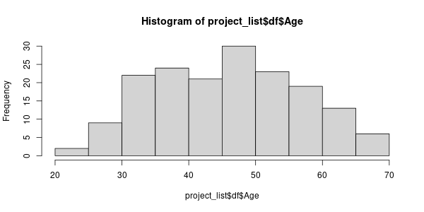
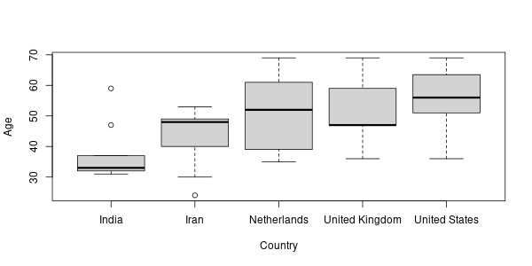

14.1 جدول ۱ جمعیت شناختی
فایل دادههای پرسشنامه در پوشه داده ذخیره شده است.
- برای ذخیره سازی متغیرهای مختلف اول یک متغیر با کلاس لیست به اسم
project_listتعریف کنید.
list- دادههای درون فایل
drug-global-survey-covid-19.csvرا درون متغیرproject_list$dfبریزید.
'data.frame': 177 obs. of 6 variables:
$ Gender : chr "Male" "Male" "Male" "Male" ...
$ Age : int 69 37 50 61 54 44 40 64 NA 62 ...
$ Date : chr "2020-03-04" "2020-04-05" "2020-04-05" "2020-04-05" ...
$ Degree : chr "MD;PhD" "MD" "MD" "PhD" ...
$ Discipline: chr "Addiction medicine" "Psychiatry" "General Medicine" "Psychiatry" ...
$ Country : chr "Netherlands" "Iran" "Iran" "Belgium" ...- فقط ابعاد
project_list$dfرا بگیرید و در متغیرproject_list$number_of_row_and_colذخیره کنید.
177 6- فقط تعداد ستونها را بگیرید و در متغیر
project_list$number_of_colذخیره کنید.
6- فقط تعداد ردیف را بگیرید و در متغیر
project_list$number_of_rowذخیره کنید.
177- بردار مرتب شده صعودی ستون سن را بگیرید.
و در متغیر
project_list$sorted_agesذخیره کنید.
24 25 26 28 28 29 30 30 30 30 30 31 32 32 32 32 32 32 32 32 32 32 33 34 34 34 34 35 35 35 35 35 35 36 36 36 37 37 37 37 37 38 38 38 39 39 39 39 40 40 40 40 40 40 40 40 40 41 41 41 41 41 42 43 43 43 43 43 43 44 44 44 44 44 45 45 45 45 46 46 47 47 47 47 47 47 47 47 47 48 48 48 48 48 48 48 49 49 49 49 49 50 50 50 50 50 50 50 51 51 51 51 51 52 52 52 53 53 53 53 53 54 54 54 54 54 54 54 55 55 55 56 56 56 56 57 58 58 58 58 58 59 59 59 59 59 59 60 60 60 61 61 61 61 62 62 62 63 63 64 64 65 65 66 67 68 69 69 69- نمودار هیستوگرام سن را رسم کنید.
و با نام
age-histogramبا فرمتpngدر پوشهimgذخیره کنید.

شکل 14.1: نمودار بافت نگار سن
- نمودار جعبهای سن را برحسب کشور برای کشورهای
United States, India, Netherlands, United Kingdom, Iranرسم کنید و در با نامage-boxplotبا فرمتpngدر پوشهimgذخیره کنید.

شکل 14.2: نمودار جعبهای سن برحسب کشورهای آمریکا، هند، هلند و ایران
- برای ستون سن میانگین و انحراف معیار را محاسبه کنید و درون قالب داده
df_age_mean_sdذخیره کنید.
column mean sd
1 Age 46.51 10.78- چهار ستون اول داده را برای سنین زیر ۳۰ و مدرک کارشناسی انتخاب کنید.
و در قالب داده با نام
df_age_below_30_and_bsc_degreeذخیره کنید.
Gender Age Date Degree
163 Male 28 2020-04-30 BSc
173 Male 25 2020-05-04 BSc- تعداد افراد با مدرک کارشناسی را محاسبه کنید.
و در متغیر
project_list$number_of_bscذخیره کنید.
6- درصد افراد با مدرک کارشناسی را محاسبه کنید.
و در متغیر
project_list$percent_of_bscذخیره کنید.
- تعداد و درصد افراد را برای همهی مدارک تحصیلی محاسبه کنید و
به صورت قالب داده در متغیر
df_degreesذخیره کنید.
value count percent
1 BSc 6 3.4
2 MD 72 40.7
3 MD;MSc 13 7.3
4 MD;PhD 32 18.1
5 MSc 13 7.3
6 Others 10 5.6
7 PhD 31 17.5- برای گرفتن تعداد مقادیر هر ستون تابعی به اسم
project_list$value_counterبنویسید.
value count percent
1 BSc 6 3.4
2 MD 72 40.7
3 MD;MSc 13 7.3
4 MD;PhD 32 18.1
5 MSc 13 7.3
6 Others 10 5.6
7 PhD 31 17.5- تابع
project_list$values_counterرا به گونهای بنویسید که قالب داده تعداد مقادیر برای ستونهای جنسیت، مدرک، رشته را بگیرد، سپس قالب داده را در متغیرproject_list$df_demogذخیره کنید.
Code
column value count percent
1 Gender Female 62 35.0
2 Gender Male 111 62.7
3 Gender Other/not disclosed 4 2.3
4 Degree BSc 6 3.4
5 Degree MD 72 40.7
6 Degree MD;MSc 13 7.3
7 Degree MD;PhD 32 18.1
8 Degree MSc 13 7.3
9 Degree Others 10 5.6
10 Degree PhD 31 17.5
11 Discipline Addiction medicine 19 10.7
12 Discipline Drug/Health Policy 8 4.5
13 Discipline General Medicine 17 9.6
14 Discipline Other Medical Specialties 3 1.7
15 Discipline Others 8 4.5
16 Discipline Pharmacology 2 1.1
17 Discipline Psychiatry 95 53.7
18 Discipline Psychology/Counseling 20 11.3
19 Discipline Social Work 5 2.8- نمودار دایرهای برای هر یک از ستونهای
[
Gender,Degree,Discipline] رسم کرده و با فرمتpngدر پوشهimgذخیره کنید.
شکل 14.3: نمودار جنسیت افراد شرکت کننده
شکل 14.4: نمودار مدرک افراد شرکت کننده
شکل 14.5: نمودار تخصص افراد شرکت کننده
- دادههای
project_list$df_age_mean_sdرا به قالب دادهproject_list$df_demogاضافه کنید و در متغیرproject_list$df_demographicذخیره کنید.
column value count_or_mean percent_or_sd
1 Gender Female 62.00 35.00
2 Gender Male 111.00 62.70
3 Gender Other/not disclosed 4.00 2.30
4 Degree BSc 6.00 3.40
5 Degree MD 72.00 40.70
6 Degree MD;MSc 13.00 7.30
7 Degree MD;PhD 32.00 18.10
8 Degree MSc 13.00 7.30
9 Degree Others 10.00 5.60
10 Degree PhD 31.00 17.50
11 Discipline Addiction medicine 19.00 10.70
12 Discipline Drug/Health Policy 8.00 4.50
13 Discipline General Medicine 17.00 9.60
14 Discipline Other Medical Specialties 3.00 1.70
15 Discipline Others 8.00 4.50
16 Discipline Pharmacology 2.00 1.10
17 Discipline Psychiatry 95.00 53.70
18 Discipline Psychology/Counseling 20.00 11.30
19 Discipline Social Work 5.00 2.80
20 Age 46.51 10.78- از جدول تهیه شده خروجی اکسل با نام
table-1-demographicتهیه کنید.